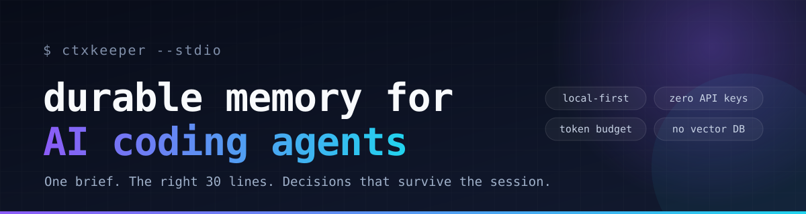

ctxkeeper is a local-first MCP server that gives AI coding agents durable project memory and token-budgeted context packs. One brief, the right 30 lines, decisions that survive the session.
The MCP ecosystem has plenty of tools. What it lacks is a way to remember a project and read less of it.
Architecture decisions, constraints, and the command that actually runs tests get re-explained every day.
Agents grep, then read hundreds of lines to find one function. The context window pays for it.
Switch clients or close the laptop, and the next session has no idea what changed or what comes next.
Two calls replace exploratory reads. Memory writes are one line each.
$ project_brief stack · commands · files to read first · git · TODOs · decisions · gotchas ✓ 1.2k tokens $ context_pack("where is the OAuth token refreshed?") src/auth/refresh.ts:42-78 + the decision that explains the 60s early-refresh rule ✓ 1.0k tokens $ remember(type="gotcha", title="refresh must happen 60s early") ✓ saved to .ctxkeeper/events.jsonl $ log_work(summary="...", files=[...], next_steps=[...]) ✓ handoff ready for tomorrow
Enter the project, locate code, record decisions, hand off. No 60-tool surface to pollute the prompt.
Onboarding, cited code windows under a token budget, memory search, and diagnostics.
Durable decisions, gotchas, commands, TODOs, and work logs. Archive is reversible.
Node.js ≥ 20.11. One process, one append-only file, no services to run.
Omit cwd. The server detects the project root from the workspace,
so one entry works in every repository.
On this repository: 17 files, ~2.9k LOC, Windows 11, Node 22.23.
0.5–1.2k tokens
~1.0k tokens, 2–4 windows
tokens for 430 lines
real stdio, Node 20/22
If it saves you a few thousand tokens today, a star helps other developers find it.